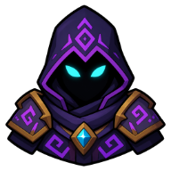

🐉
Beneath the Voidscar
The tear in reality has a guardian. End it, if you can.
| Property | Value |
|---|---|
| Quest giver |  The Last Warden |
| Zone | 🌀 The Voidscar |
| Quest points | 5 |
| Requirements | ⚔️ Combat level 90 ⛏️ Mining 70 🎣 Fishing 70 🪓 Lumbering 70 🌿 Herbalism 70 ⚔️ Iron Resolve 🦞 A Stomach of Steel |
Objectives
- Defeat 1 ×
 Abyssal Drake
Abyssal Drake
Rewards
- 🪙 20,000 coins
 Dragon Scale
Dragon Scale- 🏷️ The title “Voidscarred”
- ⏳ 4 more hours of offline progress